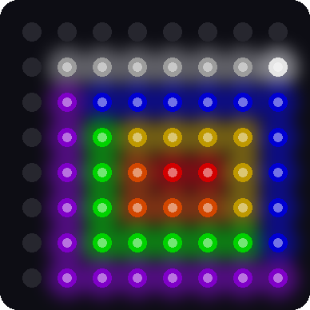

Lab 17: Tilt-a-Sketch
Pixel says...
 You've drawn pictures by typing letters. Now let's draw by tilting! A blinking dot is your pen.
Tip the kit and it rolls, leaving a trail of color behind. Let's light this up!
You've drawn pictures by typing letters. Now let's draw by tilting! A blinking dot is your pen.
Tip the kit and it rolls, leaving a trail of color behind. Let's light this up!
Program files: 17-tilt-a-sketch.py and tilt_a_sketch.py
What you'll learn
- How a list can remember a whole picture while you draw it
- How a few variables hold the state of the pen
- How the word
notflipsTruetoFalseand back - How to spot a shake with the tilt sensor
- How to draw in layers: the picture first, then the pen on top
What you'll need
- Your whole kit: the matrix, the accelerometer, and both buttons, wired as shown in the Kit Guide
- These files saved on the Pico:
config.py,font.py,kit.py,tilt_a_sketch.py, and17-tilt-a-sketch.py - Thonny open and connected to your Pico
- The rolling ball from Lab 16 and the pictures from Lab 9
The program
This program turns the kit into a drawing toy. You tilt to move the pen, and the pen paints every pixel it rolls over.
This lab has two files, like Lab 15. The short one, 17-tilt-a-sketch.py, is the one you run. It starts the module.
# Lab 17: Tilt-a-Sketch
# Filename: 17-tilt-a-sketch.py
# Version: 1.1.0
#
# Draw your own picture by tilting the kit. A blinking dot is your pen.
# Tilt the board and the pen rolls toward the low side, leaving a line of
# color behind it.
# Button 1 (GPIO 14): change the pen color
# Button 2 (GPIO 15): lift the pen up, or put it back down
# Shake the kit hard: erase the whole picture
# The code lives in the module tilt_a_sketch.py (with the shared helpers in
# kit.py) so that program 19 can load it as a mode too. Upload all the .py
# files with ./upload-code.sh before you run this.
# Not yet tried by hand: the tilt and buttons need a person to draw with them.
import tilt_a_sketch
print("Lab 17: Tilt-a-Sketch (version 1.1.0)")
tilt_a_sketch.run()
The real work lives in the module tilt_a_sketch.py. Keeping the sketch in its own module lets the demo program 19-template-main.py load it as one of its modes.
# Module: Tilt-a-Sketch (program 17, and a mode of program 19)
# Filename: tilt_a_sketch.py
# Version: 1.0.0
#
# Draw your own picture by tilting the kit. A blinking dot is your pen.
# Tilt the board and the pen rolls toward the low side, leaving a line of
# color behind it.
# Button 1 (GPIO 14): change the pen color
# Button 2 (GPIO 15): lift the pen up, or put it back down
# Shake the kit hard: erase the whole picture
# Run it on its own with 17-tilt-a-sketch.py.
# In program 19 the two buttons change modes, so the sketch leaves them
# alone. run() takes this setting:
# auto_color - True to move to the next pen color with every step, so the
# line comes out in many colors without pressing a button
from utime import ticks_ms, ticks_diff
import kit
# the pen colors, in the order button 1 steps through them. The picture can
# fill all 64 pixels, so these numbers stay small.
PEN_COLORS = [
("red", (24, 0, 0)),
("orange", (24, 8, 0)),
("yellow", (20, 16, 0)),
("green", (0, 24, 0)),
("blue", (0, 0, 24)),
("violet", (14, 0, 22)),
("white", (14, 14, 14)),
]
PEN_UP_COLOR = (30, 30, 30) # the pen blinks white while it is lifted
# the rolling pen
TILT_MIN = 0.25 # tilts smaller than this (in g) do nothing
TILT_FULL = 0.8 # tipping this far rolls the pen at full speed
STEP_SLOW_MS = 420 # time per pixel at the gentlest tilt
STEP_FAST_MS = 140 # time per pixel when tipped all the way
SHAKE_G = 1.7 # a pull along the board stronger than this is a shake
BLINK_MS = 250 # how long the pen stays on, then off
LOOP_MS = 10 # the program looks at the tilt 100 times a second
# the picture so far: one color for every spot, in (x, y) order
canvas = [kit.OFF] * kit.NUMBER_PIXELS
pen_x = kit.WIDTH // 2
pen_y = kit.HEIGHT // 2
pen_down = True
color_number = 0
def spot(x, y):
# where the color for column x, row y is kept in the canvas list
return y * kit.WIDTH + x
def bright(color):
# the pen shows a brighter copy of its color, so you can find it
return (color[0] * 2, color[1] * 2, color[2] * 2)
def show(pen_lit):
# draw the picture, then the pen on top of it
for y in range(kit.HEIGHT):
for x in range(kit.WIDTH):
kit.strip[kit.xy(x, y)] = canvas[spot(x, y)]
if pen_down:
if pen_lit:
kit.strip[kit.xy(pen_x, pen_y)] = bright(PEN_COLORS[color_number][1])
else:
kit.strip[kit.xy(pen_x, pen_y)] = kit.OFF
elif pen_lit:
kit.strip[kit.xy(pen_x, pen_y)] = PEN_UP_COLOR
kit.strip.write()
def tilt_direction(g):
# -1, 0 or 1: which way a tilt pushes, or 0 if it is too small
if g >= TILT_MIN:
return 1
if g <= -TILT_MIN:
return -1
return 0
def run(settings=None):
# run() changes the pen's state, so it says these are the variables
# at the top of the file, not new ones of its own
global pen_x, pen_y, pen_down, color_number
auto_color = settings is not None and settings["auto_color"]
# in program 19 the buttons belong to the mode changer
use_buttons = not kit.mode_buttons_on
canvas[spot(pen_x, pen_y)] = PEN_COLORS[color_number][1]
if use_buttons:
print("Button 1: next color. Button 2: pen up or down. Shake: erase.")
else:
print("Tilt to draw. Shake: erase.")
print("Pen color:", PEN_COLORS[color_number][0])
last1 = 1
last2 = 1
last_step = ticks_ms()
last_blink = ticks_ms()
pen_lit = True
show(pen_lit)
while True:
changed = False
# the buttons: a press is a change from 1 to 0
if use_buttons:
now1 = kit.button1.value()
now2 = kit.button2.value()
if now1 == 0 and last1 == 1:
color_number = (color_number + 1) % len(PEN_COLORS)
print("Pen color:", PEN_COLORS[color_number][0])
if pen_down:
canvas[spot(pen_x, pen_y)] = PEN_COLORS[color_number][1]
changed = True
if now2 == 0 and last2 == 1:
pen_down = not pen_down
print("Pen down" if pen_down else "Pen up")
if pen_down:
canvas[spot(pen_x, pen_y)] = PEN_COLORS[color_number][1]
changed = True
last1 = now1
last2 = now2
gx, gy = kit.read_tilt()
now = ticks_ms()
# a hard shake erases the picture
if (gx * gx + gy * gy) ** 0.5 > SHAKE_G:
print("Shake! The picture is erased.")
for i in range(kit.NUMBER_PIXELS):
canvas[i] = kit.OFF
if pen_down:
canvas[spot(pen_x, pen_y)] = PEN_COLORS[color_number][1]
last_step = now + 500 # hold the pen still for half a second
changed = True
# the tilt rolls the pen, faster when you tip farther
size = max(abs(gx), abs(gy))
if size >= TILT_MIN:
speed = min(1, (size - TILT_MIN) / (TILT_FULL - TILT_MIN))
interval = STEP_SLOW_MS - (STEP_SLOW_MS - STEP_FAST_MS) * speed
if ticks_diff(now, last_step) >= interval:
# move one pixel along the direction tipped hardest
if abs(gx) >= abs(gy):
new_x = pen_x + tilt_direction(gx)
new_y = pen_y
else:
new_x = pen_x
new_y = pen_y + tilt_direction(gy)
# the pen stops at the edges of the matrix
if 0 <= new_x < kit.WIDTH and 0 <= new_y < kit.HEIGHT:
pen_x = new_x
pen_y = new_y
if auto_color:
color_number = (color_number + 1) % len(PEN_COLORS)
if pen_down:
canvas[spot(pen_x, pen_y)] = PEN_COLORS[color_number][1]
last_step = now
changed = True
# blink the pen
if ticks_diff(now, last_blink) >= BLINK_MS:
pen_lit = not pen_lit
last_blink = now
changed = True
if changed:
show(pen_lit)
kit.wait(LOOP_MS)
Run 17-tilt-a-sketch.py and hold the kit flat. A red dot blinks near the middle. Tip the kit a little and the dot rolls toward the low side, leaving a red line. Hold the kit level to stop.
| To do this | Do this |
|---|---|
| Move the pen | Tilt the kit. A bigger tilt moves it faster |
| Change the pen color | Press Button 1 |
| Lift the pen, or put it back down | Press Button 2 |
| Erase the whole picture | Shake the kit hard |
When the pen is lifted, it blinks white and does not paint. That is how you move to a new spot without leaving a line. The Shell tells you what is happening:
Lab 17: Tilt-a-Sketch (version 1.1.0)
Button 1: next color. Button 2: pen up or down. Shake: erase.
Pen color: red
Pen color: orange
Pen up
Pen down
Shake! The picture is erased.

This picture was drawn by a computer simulator. A script tilted a pretend kit to draw the spiral, so your real drawing will look different.
How it works
A list that remembers the picture
# the picture so far: one color for every spot, in (x, y) order
canvas = [kit.OFF] * kit.NUMBER_PIXELS
pen_x = kit.WIDTH // 2
pen_y = kit.HEIGHT // 2
pen_down = True
color_number = 0
def spot(x, y):
# where the color for column x, row y is kept in the canvas list
return y * kit.WIDTH + x
The list canvas holds 64 colors, one for every pixel. It starts with every spot set to off. When the pen rolls over a spot, the program stores the pen's color there. A real canvas is the cloth a painter paints on.
Why not paint straight onto the matrix? Because the pen blinks. The blinking pen would wipe out the pixel under it. So the picture stays safe in canvas, and the matrix is redrawn from it each time something changes.
The four variables after it are the state of the pen. State means everything the program must remember right now. That is where the pen is, whether it is down, and which color it holds.
The function run changes the state as you draw. Its first line is global pen_x, pen_y, pen_down, color_number. The word global tells Python to change the variables at the top of the file. Without it, run would make new variables of its own, and show would never see the pen move.
The function spot(x, y) turns a column and a row into a place in the list. It uses the same math as xy from Lab 7: row times 8, plus column.
Draw in layers
def show(pen_lit):
# draw the picture, then the pen on top of it
for y in range(kit.HEIGHT):
for x in range(kit.WIDTH):
kit.strip[kit.xy(x, y)] = canvas[spot(x, y)]
if pen_down:
if pen_lit:
kit.strip[kit.xy(pen_x, pen_y)] = bright(PEN_COLORS[color_number][1])
else:
kit.strip[kit.xy(pen_x, pen_y)] = kit.OFF
elif pen_lit:
kit.strip[kit.xy(pen_x, pen_y)] = PEN_UP_COLOR
kit.strip.write()
The function show draws in two layers. First the nested loop copies the whole canvas to the matrix. Then the pen is drawn on top.
The pen blinks so that you can find it. When the pen is down, it flips between a bright copy of its color and off. When the pen is up, it flips between white and the picture underneath.
Buttons change the state
if now2 == 0 and last2 == 1:
pen_down = not pen_down
print("Pen down" if pen_down else "Pen up")
if pen_down:
canvas[spot(pen_x, pen_y)] = PEN_COLORS[color_number][1]
changed = True
Look at the line pen_down = not pen_down. The word not flips a value. If pen_down was True, it becomes False. If it was False, it becomes True. One button can switch something on and off this way.
Button 1 works like the picture show in Lab 10. It adds 1 to color_number and uses % to wrap around after the last color.
All the button code sits inside if use_buttons:. In the demo program 19-template-main.py, the buttons switch between modes. There, the sketch leaves the buttons alone.
Shake to erase
# a hard shake erases the picture
if (gx * gx + gy * gy) ** 0.5 > SHAKE_G:
print("Shake! The picture is erased.")
for i in range(kit.NUMBER_PIXELS):
canvas[i] = kit.OFF
if pen_down:
canvas[spot(pen_x, pen_y)] = PEN_COLORS[color_number][1]
last_step = now + 500 # hold the pen still for half a second
changed = True
The numbers gx and gy are the pull along the board, left to right and top to bottom. The if line joins them into one number: the total pull along the board. It squares each one, adds them, and takes the square root. The ** 0.5 part is the square root.
Gravity alone can never pull harder than about 1 g. A shake can. So if the total goes above SHAKE_G, which is 1.7, the program knows you shook the kit.
Here is one example. A shake gives gx = 1.5 and gy = 1.0.
| Step | Math | Answer |
|---|---|---|
| Square each one | 1.5 × 1.5 and 1.0 × 1.0 | 2.25 and 1.00 |
| Add them | 2.25 + 1.00 | 3.25 |
| Take the square root | the square root of 3.25 | about 1.80 |
1.80 is bigger than 1.7, so the picture is erased. The loop sets every spot in canvas back to off.
Stay on the matrix
# the pen stops at the edges of the matrix
if 0 <= new_x < kit.WIDTH and 0 <= new_y < kit.HEIGHT:
pen_x = new_x
pen_y = new_y
if auto_color:
color_number = (color_number + 1) % len(PEN_COLORS)
if pen_down:
canvas[spot(pen_x, pen_y)] = PEN_COLORS[color_number][1]
last_step = now
changed = True
The pen takes one step at a time, the same way the ball did in the maze. Before it moves, this check makes sure the new spot is on the matrix. Columns and rows both go from 0 to 7. If the new spot would be off the edge, the pen stays where it is.
The two auto_color lines are for the demo program. Its buttons are busy changing modes, so the pen moves to the next color with every step instead.
Key idea
A drawing program keeps two things apart: the picture it remembers and the picture it shows. The pen, the blinking, and the erasing all change what is shown without losing what is remembered.
Try it yourself
For questions 2 to 5, open tilt_a_sketch.py in Thonny, change it, and save it onto the Pico. Then run 17-tilt-a-sketch.py again.
- Draw the first letter of your name. Use Button 2 to lift the pen between lines.
- Add a pen color. Add the line
("pink", (24, 4, 12)),to thePEN_COLORSlist. How many presses of Button 1 does it take to reach pink? - Start in a corner. Change
pen_x = kit.WIDTH // 2topen_x = 0, and do the same forpen_y. Where does the pen start now? - Make the pen slower. Raise
STEP_FAST_MSfrom 140 to 300. Is it easier to draw neat lines? - Change the shake. Set
SHAKE_G = 1.2. Draw something, then stand the kit up on its edge and tap it. What happens? Why is 1.7 a safer number?
Check your understanding
- What does the list
canvasremember? How many items does it hold? - What does the word
notdo topen_down? - Why can a slow tilt never erase the picture?
- The pen is at column 7 and you tilt to the right. What does the pen do, and which line of code decides that?
- Why does the program draw the pen after it draws the canvas?
Lab complete!
 You built your own drawing toy! You are the artist now, and gravity is your paintbrush.
You built your own drawing toy! You are the artist now, and gravity is your paintbrush.
What's next: In Lab 18: Modes, you will load twelve light shows from one menu with your two buttons.